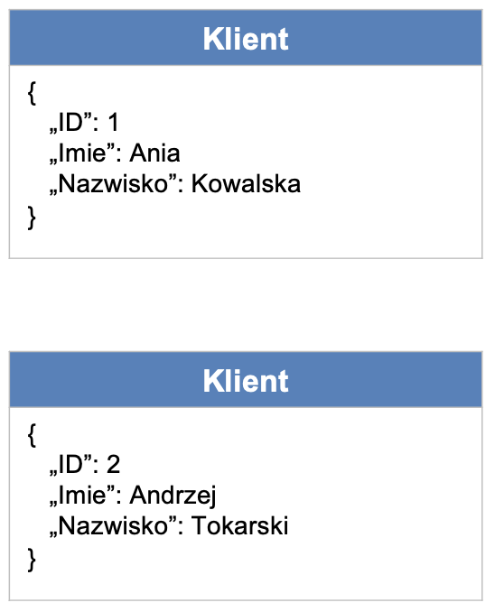
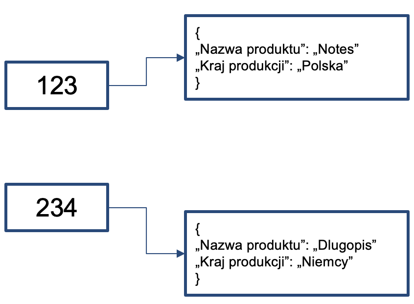

Rozdział 4 Bazy danych
Technologie gromadzenia danych powinny być dostosowane do ich typu.

4.1 Bazy SQL
Dane ustrukturyzowane
- Uporządkowane w tabelach
- Można określić między nimi relacje
- Można odpytywać językiem SQL (Structured Query Language)
- Wymagają wskazania schematu (Schema): sposobu organizacji danych
- W efekcie, gromadzimy najczęściej w bazach SQL.
Kluczową technologią w tego typu systemach jest OLTP (OnLine Transaction Processing).
Przykładowe bazy SQL: Oracle, MS SQL Server, MySQL, PostgreSQL
Przykładowe zastosowania: systemy finansowe, transakcyjne, ERP, etc.
4.2 Bazy NoSQL
Bazy NoSQL służą do przechowywania danych nieustrukturyzowanych.
Wyróżniamy 4 podstawowe typy baz NoSQL.
- Bazy zorientowane na dokumenty
- Bazy kolumnowe
- Bazy oparte o wartości kluczy (key-value)
- Bazy grafowe.

Bazy zorientowane na dokumenty:
- Nie posiadają ustalonego schematu
- Dane składowane w dokumentach JSON (JavaScript Object Notation)
- Każdy dokument może mieć inny zestaw pól
- Przykładowe bazy: MongoDB, CouchDB, DocumentDB
- Przykładowe zastosowania: systemy zarządzania dokumentami.

Bazy kolumnowe
- Dane składowane są w nich w kolumnach (nie w wierszach)
- W efekcie, operacje (zapytania, dodawanie, kasowanie, etc.) oparte na kolumnach działają w nich bardzo szybko
- Przykładowe bazy: Cassandra
- Przykładowe zastosowania: zaawansowane analizy danych.

Bazy oparte o wartości kluczy (key-value)
- Każdy wpis ma w nich unikatowy klucz
- Efekt: umożliwiają szybszy zapis i odczyt danych
- Przykładowe bazy: Redis, Amazon Dynamo DB
- Przykładowe zastosowania: opinie klientów.

Bazy grafowe
Dane skladowane w formie sieci
Koncentracja na połączeniach (relacjach) pomiędzy punktami (obiektami)
Wykorzystywane w analizach relacji
Przykładowe bazy: Neo4j, Inifinite Graph
Przykładowe zastosowania: analiza sieci społecznych.